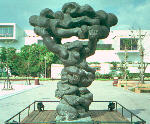
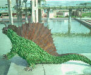

●生命的造形
●生命的造形呂清夫 撰文

 寫實乍看都是「人模人樣」，但仔細一看，即知味道大不相同，古典寫實如希臘的維納斯像（見左圖）好像屬於客觀寫實，其實它們的身高往往都有理想的比例，雕塑家常把客觀現實中的美點抽離出來，集中表現於雕像上面，進而強調這樣的古典理想：「崇高的單純與靜謐的莊嚴」。客觀寫實如羅馬的帝王像會把人的五官與個性刻畫得入木三分，有時還真像從真人身上印下來，這個傳統的真傳或再生要等到文藝復興時代，如達文西的老師維洛奇歐（A. del Verrocchio）便是個中高手，其寫實工夫完全建立在肌肉與骨骼的解剖學基礎上，他放在威尼斯的名作「克列奧尼將軍騎馬像」（見右圖）即表現了剛強的相貌與遒勁的戰馬，連其豪華的基座也是一件名作。
寫實乍看都是「人模人樣」，但仔細一看，即知味道大不相同，古典寫實如希臘的維納斯像（見左圖）好像屬於客觀寫實，其實它們的身高往往都有理想的比例，雕塑家常把客觀現實中的美點抽離出來，集中表現於雕像上面，進而強調這樣的古典理想：「崇高的單純與靜謐的莊嚴」。客觀寫實如羅馬的帝王像會把人的五官與個性刻畫得入木三分，有時還真像從真人身上印下來，這個傳統的真傳或再生要等到文藝復興時代，如達文西的老師維洛奇歐（A. del Verrocchio）便是個中高手，其寫實工夫完全建立在肌肉與骨骼的解剖學基礎上，他放在威尼斯的名作「克列奧尼將軍騎馬像」（見右圖）即表現了剛強的相貌與遒勁的戰馬，連其豪華的基座也是一件名作。 台灣的政治銅像雖也很多，但是好的作品可以說相當少，蒲添生一九四九年在中山堂前塑造的孫中山像（見圖）應屬其中的一件，從前看電影唱國歌時最先打出來的影像就是這一尊，塑像本身要言不繁，莊嚴肅穆，並成了後來許多同類作品模仿的對象。可惜這座銅像的基座並未重新建造，而是沿用日據時代的舊東西，原來矗立的是北白川宮能久像，跟孫中山的背景完全相反。
台灣的政治銅像雖也很多，但是好的作品可以說相當少，蒲添生一九四九年在中山堂前塑造的孫中山像（見圖）應屬其中的一件，從前看電影唱國歌時最先打出來的影像就是這一尊，塑像本身要言不繁，莊嚴肅穆，並成了後來許多同類作品模仿的對象。可惜這座銅像的基座並未重新建造，而是沿用日據時代的舊東西，原來矗立的是北白川宮能久像，跟孫中山的背景完全相反。 好的料理也要有好的餐盤來襯托，基座不相稱的銅像自然大打折扣。這種例子在台灣似乎特別多，二二八公園內同樣由蒲氏父子塑造的孔子像也是撿日本人的舊基座來用的。蒲添生晚年曾為林靖娟塑造紀念像（見右圖），但風格已經大為改變。
好的料理也要有好的餐盤來襯托，基座不相稱的銅像自然大打折扣。這種例子在台灣似乎特別多，二二八公園內同樣由蒲氏父子塑造的孔子像也是撿日本人的舊基座來用的。蒲添生晚年曾為林靖娟塑造紀念像（見右圖），但風格已經大為改變。 再讓我們看看羅丹（A.Rodin），他本來也從事客觀寫實，同時由於太過寫實，有的作品還被懷疑是從真人身上印下來的，但他後來逐漸轉入主觀寫實，在寫實中不忘加入自己的主觀感覺，如他的沈思者像就未必照單全收真人形象（見左圖），有些細節常被省略，有些特徵常被誇張，有時連材料（如泥土、大理石）的特徵都被強調出來。可惜國人不察，台中雅哥花園竟用水泥來仿製這個沈思者，不但材質可議，造形也一踏糊塗（見下圖）。●化外的靈手
再讓我們看看羅丹（A.Rodin），他本來也從事客觀寫實，同時由於太過寫實，有的作品還被懷疑是從真人身上印下來的，但他後來逐漸轉入主觀寫實，在寫實中不忘加入自己的主觀感覺，如他的沈思者像就未必照單全收真人形象（見左圖），有些細節常被省略，有些特徵常被誇張，有時連材料（如泥土、大理石）的特徵都被強調出來。可惜國人不察，台中雅哥花園竟用水泥來仿製這個沈思者，不但材質可議，造形也一踏糊塗（見下圖）。●化外的靈手 至於省略或誇張最為明顯的應屬東西方的傳統雕塑，羅丹曾著有「巴黎的寺廟」一書，他十分推崇巴黎聖母院等哥德式大教堂的雕刻，這種雕刻為著適合建築空間或細部的需要，物象常被適度扭曲或變形，藝術家也因此得以發揮他們的造形能力。我們看巴黎聖母院正面入口的雕刻，便可以感覺到這種特質。自然，雕刻是在表現宗教故事，對於文盲更是絕佳的說教，如其入口之一的山形牆上分三段，依次描寫聖母加冕、聖母去世與復活（背景是耶穌與十二門徒）、聖經中的諸王與先知。其中人物的高度未必依照正常的比例，顯得有點笨拙，然卻笨的可愛，讓人想到象牙的雕刻。
至於省略或誇張最為明顯的應屬東西方的傳統雕塑，羅丹曾著有「巴黎的寺廟」一書，他十分推崇巴黎聖母院等哥德式大教堂的雕刻，這種雕刻為著適合建築空間或細部的需要，物象常被適度扭曲或變形，藝術家也因此得以發揮他們的造形能力。我們看巴黎聖母院正面入口的雕刻，便可以感覺到這種特質。自然，雕刻是在表現宗教故事，對於文盲更是絕佳的說教，如其入口之一的山形牆上分三段，依次描寫聖母加冕、聖母去世與復活（背景是耶穌與十二門徒）、聖經中的諸王與先知。其中人物的高度未必依照正常的比例，顯得有點笨拙，然卻笨的可愛，讓人想到象牙的雕刻。 我們傳統的寺廟雕刻也多半具有異曲同工之妙，如鹿港天后宮的打老虎浮雕即經過某種簡化與變形，畫面中的老虎已跟現實有一段距離，簡言之，老虎身上的花紋以及周遭的樹木、石頭都經過「樣式化」的處理，使人一眼看去即知是東方傳統的雕刻。同樣的，淡水鄞山寺入口的彩色浮雕也有一隻老虎充分「樣式化」，嘴角頗像鹿港那一隻，但更具幽默感（見左圖），其他如扇形的松葉也都可以看出傳統的風格。這種樣式化通常都有長遠的歷史演變，逐漸累積而成，所以往往味道十足，如埃及、中國、墨西哥的傳統雕刻、乃至黑人雕刻莫不如此。近代人如果要將現實物象加以簡化或變形，便需要有特殊的造形能力，否則將會陷於空疏乏味，但也有很多藝術家借用這些化外的靈手。●雕像與模型的差別在哪裡
我們傳統的寺廟雕刻也多半具有異曲同工之妙，如鹿港天后宮的打老虎浮雕即經過某種簡化與變形，畫面中的老虎已跟現實有一段距離，簡言之，老虎身上的花紋以及周遭的樹木、石頭都經過「樣式化」的處理，使人一眼看去即知是東方傳統的雕刻。同樣的，淡水鄞山寺入口的彩色浮雕也有一隻老虎充分「樣式化」，嘴角頗像鹿港那一隻，但更具幽默感（見左圖），其他如扇形的松葉也都可以看出傳統的風格。這種樣式化通常都有長遠的歷史演變，逐漸累積而成，所以往往味道十足，如埃及、中國、墨西哥的傳統雕刻、乃至黑人雕刻莫不如此。近代人如果要將現實物象加以簡化或變形，便需要有特殊的造形能力，否則將會陷於空疏乏味，但也有很多藝術家借用這些化外的靈手。●雕像與模型的差別在哪裡  例如省立博物館門口的銅牛（一九三五年，作者不詳，由當時的滿州國所捐贈）便是如此（見右圖），此銅牛經過少許簡化與變形，但是結果卻顯得欠缺藝術性，甚至成了徒具形式的動物模型。不論欣賞或創作具象藝術，如果能在模型與作品之間看出分際，則思過半矣。
例如省立博物館門口的銅牛（一九三五年，作者不詳，由當時的滿州國所捐贈）便是如此（見右圖），此銅牛經過少許簡化與變形，但是結果卻顯得欠缺藝術性，甚至成了徒具形式的動物模型。不論欣賞或創作具象藝術，如果能在模型與作品之間看出分際，則思過半矣。 此銅牛的作者如果不是造形能力不足，便可能是描寫能力欠佳。其實如果不善於造形表現，大可老老實實從事現實的描寫，不論最後是古典寫實或客觀寫實，都有可觀之處。所以同樣是牛，我們寧取一九三○年由黃土水創作於台北中山堂光復廳的「水牛群像」浮雕（見左圖），這件作品雖有少許的簡化，卻沒有經過變形，但是仍舊十分耐看，它沒有傳統式的樣式化，有的只是徹底的近代化，把西方的寫實精神引進之後，表現了早年台灣農村的單純與靜謐。
此銅牛的作者如果不是造形能力不足，便可能是描寫能力欠佳。其實如果不善於造形表現，大可老老實實從事現實的描寫，不論最後是古典寫實或客觀寫實，都有可觀之處。所以同樣是牛，我們寧取一九三○年由黃土水創作於台北中山堂光復廳的「水牛群像」浮雕（見左圖），這件作品雖有少許的簡化，卻沒有經過變形，但是仍舊十分耐看，它沒有傳統式的樣式化，有的只是徹底的近代化，把西方的寫實精神引進之後，表現了早年台灣農村的單純與靜謐。 換言之，省立博物館的銅牛既沒有寫實的韻味，也沒有傳統的特色，可以說徒具形式而已。同樣的，大陸名雕塑家錢紹武在寒山寺所作的「張繼像」（見右圖）也試圖簡化對象，但是簡化得似乎沒什麼道理，反而顯得相當單調，當然國內類似的單調之作可以說不在少數。反觀雲崗大佛也同樣有一些簡化與變形，但是味道十足，並具有某種風格，主要原因可能在於身體的造形與衣褶的線條有沒有善加處理，簡化可能要有某種底線，同時基於某種必要，適度行之，不能一味簡化到幾乎什麼也沒有。●少即是多，虛勝於實 簡化或變形可以說是近代雕塑一路走來、始終如一的路線，其目的可能為著表現某種情緒，可能為著創造某種力量，也可能為著抓住某種真實。例如西班牙人米羅（J. Miro）的作品經常作極度的簡化，有時還把物象化約到符號的層次，充滿童趣與幽默，人的四肢五官往往被大搬家，並以很簡化的形態暗示出來，一條線可能暗示微笑，一個包包也許表示髮髻或耳朵，一個尖尖又可能是手臂，一個凹洞也可能表現某個器官，可以說以少搏多，韻味無窮，讓人想到黑人的雕刻。瑞士人傑克梅第（A. Giacometti）的瘦削作品表現了戰後世界的孤寂與苦悶，其人物造形雖骨瘦如柴，卻充滿力量，其作品的量體已被壓到最低限，剩下幾條線，物象的概念也幾乎被剝光，由此使得周遭的現實反而明晰地凸顯於觀者的眼中，作品似乎便成了強調現實的框框而已。要之，寫實的目的應在再現我們的現實，但是變形或簡化，則在試圖凸顯現實的本身，或創造另一個現實，米羅等人可能認為顛三倒四的夢境世界之真實性不下於現實世界，此即所謂的超現實主義，米羅與傑克梅第都參加過此一運動。
換言之，省立博物館的銅牛既沒有寫實的韻味，也沒有傳統的特色，可以說徒具形式而已。同樣的，大陸名雕塑家錢紹武在寒山寺所作的「張繼像」（見右圖）也試圖簡化對象，但是簡化得似乎沒什麼道理，反而顯得相當單調，當然國內類似的單調之作可以說不在少數。反觀雲崗大佛也同樣有一些簡化與變形，但是味道十足，並具有某種風格，主要原因可能在於身體的造形與衣褶的線條有沒有善加處理，簡化可能要有某種底線，同時基於某種必要，適度行之，不能一味簡化到幾乎什麼也沒有。●少即是多，虛勝於實 簡化或變形可以說是近代雕塑一路走來、始終如一的路線，其目的可能為著表現某種情緒，可能為著創造某種力量，也可能為著抓住某種真實。例如西班牙人米羅（J. Miro）的作品經常作極度的簡化，有時還把物象化約到符號的層次，充滿童趣與幽默，人的四肢五官往往被大搬家，並以很簡化的形態暗示出來，一條線可能暗示微笑，一個包包也許表示髮髻或耳朵，一個尖尖又可能是手臂，一個凹洞也可能表現某個器官，可以說以少搏多，韻味無窮，讓人想到黑人的雕刻。瑞士人傑克梅第（A. Giacometti）的瘦削作品表現了戰後世界的孤寂與苦悶，其人物造形雖骨瘦如柴，卻充滿力量，其作品的量體已被壓到最低限，剩下幾條線，物象的概念也幾乎被剝光，由此使得周遭的現實反而明晰地凸顯於觀者的眼中，作品似乎便成了強調現實的框框而已。要之，寫實的目的應在再現我們的現實，但是變形或簡化，則在試圖凸顯現實的本身，或創造另一個現實，米羅等人可能認為顛三倒四的夢境世界之真實性不下於現實世界，此即所謂的超現實主義，米羅與傑克梅第都參加過此一運動。 克梅第表現的不安與焦慮讓人想起法國雕塑家李希爾（G. Richier）,這兩人都曾經追隨羅丹的學生布爾代勒（E.A. Bourdelle），李希爾的作品「颶風男、女」雖然乍看爛爛的（見圖），其實相當耐看，他把二次大戰後人心破碎、民生凋敝的感覺表現得淋漓盡致，可是他的模仿者並不是這樣，往往只是為爛而爛，可能自己也搞不清楚為什麼要那樣做。
克梅第表現的不安與焦慮讓人想起法國雕塑家李希爾（G. Richier）,這兩人都曾經追隨羅丹的學生布爾代勒（E.A. Bourdelle），李希爾的作品「颶風男、女」雖然乍看爛爛的（見圖），其實相當耐看，他把二次大戰後人心破碎、民生凋敝的感覺表現得淋漓盡致，可是他的模仿者並不是這樣，往往只是為爛而爛，可能自己也搞不清楚為什麼要那樣做。 ●生命的造形

立陶宛人利普希茲（J. Lipchitz）的雕塑則經過極度變形，仔細看都可以看出疊羅漢般的人體群聚在一起，同時也都有社會性的主題，但表現上毫不平鋪直敘，其重點應該放整體的造形之美，各個人體之變形不過是為了整體之造形，尤以洛杉磯文化中心的作品「地球之和平」配上噴泉水景，更為壯觀（見左圖）。在台北展出的「人民政府」（見右圖），也只是一堆扭曲的人體，但有力拔山兮氣蓋世之慨。 同樣喜歡表現人體造形的雕塑家還有英國人摩爾（H. Moore），但是摩爾的作品有著更舒展的曲線，他曾經熱中於墨西哥的傳統雕刻，一度還受過它的影響，這正如畢卡索也受過黑人雕刻的影響一般，各地的傳統雕刻著實風靡過不少現代藝術家。但摩爾的喜歡墨西哥雕刻最主要的因素還在於他喜歡一種富於生命力的東西，所以海邊的貝殼、動物的骨骼都曾經使他傾倒，看他的作品要看的應該是大自然精髓所在的、富於生命力的造形或線條（見左圖）。他自己曾說：「表現美與表現力之間有一種功能上的不同，前者的目的在於使官能感覺愉快，而後者卻有一種精神上的活力，對我來說，此種活力較官能感覺更為動人和更為深入。」此所以大家喜歡走向半抽象或抽象之路，而不願走回原來的寫實老路。寫實藝術基本上是為了抓住真實或反映現實，但是作家徐訏曾說：「寫實主義認為藝術家的任務，就是反映真實的外界。但是追求外界的真實到了極點，這真實就變得非常空虛。於是有人說，所謂外界是什麼呢？不過是我的感覺而已。有的說，我所知的外界實際上只是我腦裡的印象而已。所以我們的表達，既不能真實地表示外界，還不如老老實實表達我所獲得的印象或我的感覺。」●藝術本天成，妙手偶得之 因之，不論描寫得多像，都無法逼近真實，有時骯髒的東西經過描寫之後反而變得漂亮起來。這時似乎只有一條路，那就是：你希望我反映現實嗎，不必反映了，我的作品就直接把現實的片段展現給你看，這就出現了所謂的「新現實主義」，例如法國人阿爾曼（Arman）就是將現實中的廢棄物組合起來成為作品，同是法國人塞撒（Cesar）也將廢棄的汽車壓榨成作品，這類東西也可稱之為廢物藝術，而廢棄物在現代社會中則是一種棘手的現實問題。
同樣喜歡表現人體造形的雕塑家還有英國人摩爾（H. Moore），但是摩爾的作品有著更舒展的曲線，他曾經熱中於墨西哥的傳統雕刻，一度還受過它的影響，這正如畢卡索也受過黑人雕刻的影響一般，各地的傳統雕刻著實風靡過不少現代藝術家。但摩爾的喜歡墨西哥雕刻最主要的因素還在於他喜歡一種富於生命力的東西，所以海邊的貝殼、動物的骨骼都曾經使他傾倒，看他的作品要看的應該是大自然精髓所在的、富於生命力的造形或線條（見左圖）。他自己曾說：「表現美與表現力之間有一種功能上的不同，前者的目的在於使官能感覺愉快，而後者卻有一種精神上的活力，對我來說，此種活力較官能感覺更為動人和更為深入。」此所以大家喜歡走向半抽象或抽象之路，而不願走回原來的寫實老路。寫實藝術基本上是為了抓住真實或反映現實，但是作家徐訏曾說：「寫實主義認為藝術家的任務，就是反映真實的外界。但是追求外界的真實到了極點，這真實就變得非常空虛。於是有人說，所謂外界是什麼呢？不過是我的感覺而已。有的說，我所知的外界實際上只是我腦裡的印象而已。所以我們的表達，既不能真實地表示外界，還不如老老實實表達我所獲得的印象或我的感覺。」●藝術本天成，妙手偶得之 因之，不論描寫得多像，都無法逼近真實，有時骯髒的東西經過描寫之後反而變得漂亮起來。這時似乎只有一條路，那就是：你希望我反映現實嗎，不必反映了，我的作品就直接把現實的片段展現給你看，這就出現了所謂的「新現實主義」，例如法國人阿爾曼（Arman）就是將現實中的廢棄物組合起來成為作品，同是法國人塞撒（Cesar）也將廢棄的汽車壓榨成作品，這類東西也可稱之為廢物藝術，而廢棄物在現代社會中則是一種棘手的現實問題。 國內一度將「新現實主義」譯成「新寫實主義」，並因此引起了不少誤解，誤以為國際的藝術開始浪子回頭了。在此，塞撒的作品可以提供我們一個解題的線索，因為他除了將廢棄汽車原樣秀給你看之外，還有一件眾所周知的「大拇指」在台北展出（見左圖），這兩件東西如果並排一起，大家也許不會認為是同一個人的作品，但是如果細加推敲，仍可從中理出其間的脈絡。由於新現實主義的創作態度是「藝術本天成，妙手偶得之」，所以很多作品都是靈思重於手工。 塞撒的「大拇指」其實是先用石膏把大拇指複製出來（有學者認為是藝術家自己的拇指），然後再經過機械性的放大，這種放大就像美國普普藝術家把一小幅漫畫放得很大很大一般，所以可以說是撿現成的，本質上跟把現實或廢棄汽車直接秀給你看並沒有兩樣，只是多了一道複製手續而已，而複製本身由工人來做都可以做得很好。此事使我想起了一九八一年在歷史博物館展出的台鳳瓦楞紙箱，這也是經過機械化複製的廢棄物，由日本人三島喜美代所作，但因為複製的太過惟妙惟肖，又擺在展覽櫥窗裡邊，所以開幕前夕，當時的何館長便很緊張地告訴館內同仁說：「快要開幕了，還不趕快把垃圾拿走！」其實新現實主義的原意也是要你看看我們的垃圾的現實，複製不複製並非重點，同時複製技術也不能跟藝術劃上等號。但是看熱鬧的人自然會在這個技術上打轉，於是新現實乃被望文生義成「新寫實」了，其實如果真要稱之為「寫實」，那也只能說是「不寫」的寫實
國內一度將「新現實主義」譯成「新寫實主義」，並因此引起了不少誤解，誤以為國際的藝術開始浪子回頭了。在此，塞撒的作品可以提供我們一個解題的線索，因為他除了將廢棄汽車原樣秀給你看之外，還有一件眾所周知的「大拇指」在台北展出（見左圖），這兩件東西如果並排一起，大家也許不會認為是同一個人的作品，但是如果細加推敲，仍可從中理出其間的脈絡。由於新現實主義的創作態度是「藝術本天成，妙手偶得之」，所以很多作品都是靈思重於手工。 塞撒的「大拇指」其實是先用石膏把大拇指複製出來（有學者認為是藝術家自己的拇指），然後再經過機械性的放大，這種放大就像美國普普藝術家把一小幅漫畫放得很大很大一般，所以可以說是撿現成的，本質上跟把現實或廢棄汽車直接秀給你看並沒有兩樣，只是多了一道複製手續而已，而複製本身由工人來做都可以做得很好。此事使我想起了一九八一年在歷史博物館展出的台鳳瓦楞紙箱，這也是經過機械化複製的廢棄物，由日本人三島喜美代所作，但因為複製的太過惟妙惟肖，又擺在展覽櫥窗裡邊，所以開幕前夕，當時的何館長便很緊張地告訴館內同仁說：「快要開幕了，還不趕快把垃圾拿走！」其實新現實主義的原意也是要你看看我們的垃圾的現實，複製不複製並非重點，同時複製技術也不能跟藝術劃上等號。但是看熱鬧的人自然會在這個技術上打轉，於是新現實乃被望文生義成「新寫實」了，其實如果真要稱之為「寫實」，那也只能說是「不寫」的寫實 主義了。
主義了。

而自從「新現實主義」出現以後，世界的藝術觀念隨之一變，塞撒的大拇 指也並非個案，威尼斯有大手掌（見左圖），台北捷運也有拈花之手。 同時我們幾乎可以說，只要你喜歡，什麼都可以是藝術，波昂貝多芬紀念館附近出現了猜謎式的貝多芬像（見右圖），只有某些角度看去才能看出它是誰。過去的雕塑多半是材料本色，現在則可以花花綠綠，法國人妮基（Niki de Saint-Phalle）的作品「世界」不但五花十色，有的還會轉動、噴水。 拉蘭納（Lalanne）夫婦還把藝術品跟日用品的界線打消了，她們的作品「恐龍三世」（見左圖）不但可以噴水，還可以做爬藤的棚架。雕塑演變至此，連雕塑一詞都被顛覆了，這恐怕就是後現代的世界了。